Capítulo 6 Modelos Univariados y Multivariados de Volatilidad
6.1 Motivación
En este capítulo discutiremos los modelos de Heterocedasticidad Condicional Autoregresiva (ARCH, por sus siglas en inglés) y los modelos de Heterocedasticidad Condicional Autoregresiva Generalizados (GARCH, por sus siglas en inglés), los cuales tienen la característica de modelar situaciones como las que ilustra la Figura 6.2. Es decir:
Existen zonas donde la variación de los datos es mayor y zonas donde la variación es más estable–a estas situaciones se les conoce como de variabilidad por clúster–, y
los datos corresponden a información de alta frecuencia.
Iniciemos por las bibliotecas necesarias:
library(expm)
library(Matrix)
library(ggplot2)
library(quantmod)
library(moments)
library(dynlm)
library(broom)
library(FinTS)
library(lubridate)
library(forecast)
library(readxl)
library(MASS)
library(rugarch)
library(tsbox)
library(MTS)
library(rmgarch)
library(Rcpp)Para el análisis de temas financieros existe una librería de mucha utilidad llamada quantmod. En primer lugar esta librería permite acceder a datos financieros de un modo muy simple, es posible descargar series financieras desde yahoo, la FRED (Federal Reserve Economic Data), google, etc. Por otro lado, también es una librería que permite realizar gráficos altamente estéticos con unas cuantas líneas de código. Ahora, usaremos datos de Yahoo Finance respecto de la cotización del bitcoin (ticker: “BTC-USD”).
options("getSymbols.warning4.0"=FALSE)
BTC <-getSymbols("BTC-USD", src = "yahoo", auto.assign = FALSE)
BTC <- na.omit(BTC)
chartSeries(BTC,TA='addBBands();
addBBands(draw="p");
addVo();
addMACD()',# subset='2021',
theme="white")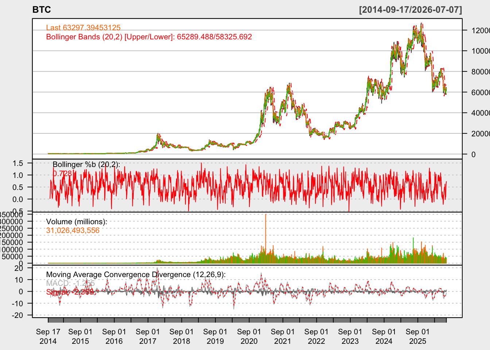
head(BTC)## BTC-USD.Open BTC-USD.High BTC-USD.Low BTC-USD.Close BTC-USD.Volume
## 2014-09-17 465.864 468.174 452.422 457.334 21056800
## 2014-09-18 456.860 456.860 413.104 424.440 34483200
## 2014-09-19 424.103 427.835 384.532 394.796 37919700
## 2014-09-20 394.673 423.296 389.883 408.904 36863600
## 2014-09-21 408.085 412.426 393.181 398.821 26580100
## 2014-09-22 399.100 406.916 397.130 402.152 24127600
## BTC-USD.Adjusted
## 2014-09-17 457.334
## 2014-09-18 424.440
## 2014-09-19 394.796
## 2014-09-20 408.904
## 2014-09-21 398.821
## 2014-09-22 402.152
tail(BTC)## BTC-USD.Open BTC-USD.High BTC-USD.Low BTC-USD.Close BTC-USD.Volume
## 2026-07-02 60004.77 62117.88 59532.32 61485.30 40109297349
## 2026-07-03 61492.07 62879.01 61176.72 62544.20 26131813598
## 2026-07-04 62545.13 63398.41 62287.59 63088.30 18608397613
## 2026-07-05 63089.06 63935.85 62413.99 63547.88 18267466154
## 2026-07-06 63551.02 64597.57 61275.83 63995.02 36552222303
## 2026-07-07 63994.60 64257.63 62623.93 63297.39 31026493556
## BTC-USD.Adjusted
## 2026-07-02 61485.30
## 2026-07-03 62544.20
## 2026-07-04 63088.30
## 2026-07-05 63547.88
## 2026-07-06 63995.02
## 2026-07-07 63297.39Para fines del ejercicio de esta clase, usaremos el valor de la acción ajustado. Esto nos servirá para calcular el rendimiento diario, o puesto en lenguaje de series temporales podemos decir que usaremos la serie en diferencias logarítmicas.
plot(BTC$`BTC-USD.Adjusted`)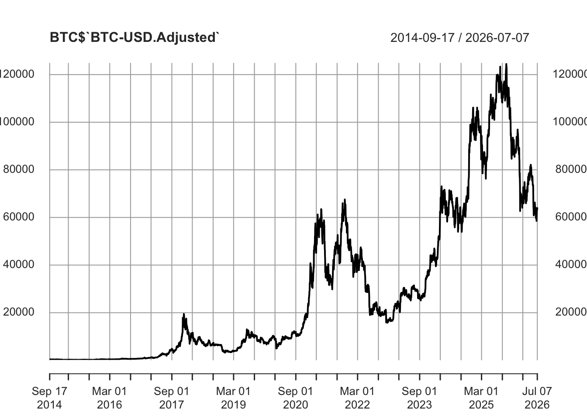
Figure 6.1: Evolución del precio del Bitcoin
Una de las preguntas relevantes al observar la serie en diferencias, es si podríamos afirmar que esta serie cumple con el supuesto de homoscedasticidad. Para ello, la Figura 6.2 muestra que las variaciones en el precio del Bitcoin muestran un escenario en el que no se cumple el supuesto de la homocedasticidad.
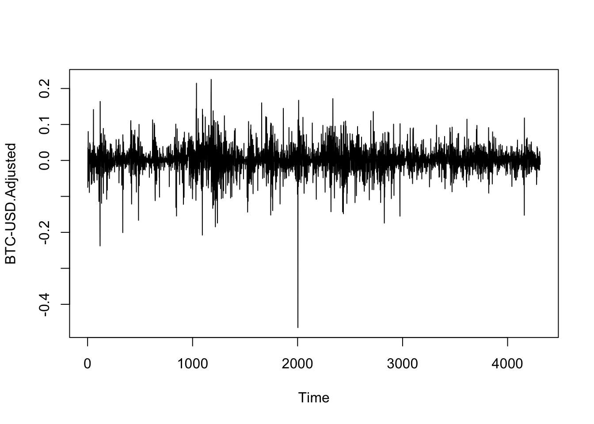
Figure 6.2: Evolución del rendimiento (diferencias logarítmicas) del Bitcoin
6.1.1 Value at Risk (VaR)
Utilicemos como ejemplo el Valor en Riesgo. Este es básicamente un cálculo que nos permite estimar el monto que una acción o portafolio podría perder dada una probabilidad \((1-\alpha)\). Supongamos un \(\alpha = 0.05\), de esta forma, la Figura 6.3 ilustra la región de la distribución que consideraríamos como el VaR.
## 5%
## -5.4
qplot(logret , geom = 'histogram') +
geom_histogram(fill = 'lightblue' , bins = 30) +
geom_histogram( aes(logret[logret < quantile(logret , 0.05)]) ,
fill = 'red' , bins = 30) +
labs(x = 'Daily Returns')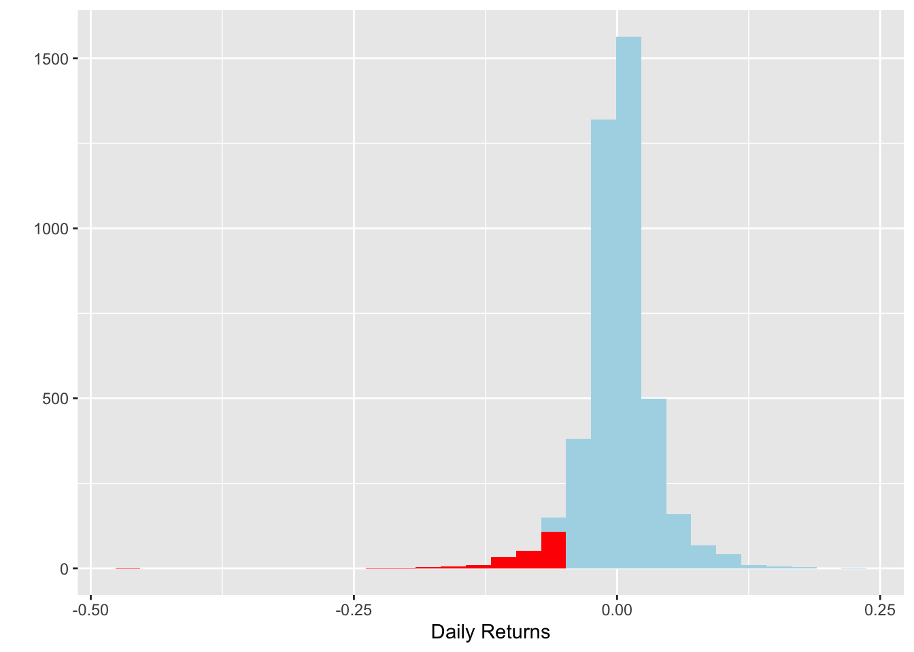
Figure 6.3: Histograma de rendimientos del Bitcoin
Ahora bien, una de las preguntas que nos podemos hacer es si los rendimientos del Bitcoin se aproximan a una distribución normal. Para ello, la Figura 6.4 ilustra esta comparación, de la cual podemos observar que una prueba de normalidad rechaza esa hipótesis–el estadístico Jarque-Bera indica que la serie de rendimientos no tiene una distribución normal–.
normal_dist <- rnorm(100000, mean(logret), sd(logret))
VaR_n <- quantile(normal_dist, 0.05)
ES_n <- mean(normal_dist[normal_dist<VaR])
ggplot()+
geom_density(aes(logret, geom ='density', col = 'returns'))+
geom_density(aes(normal_dist, col = 'normal'))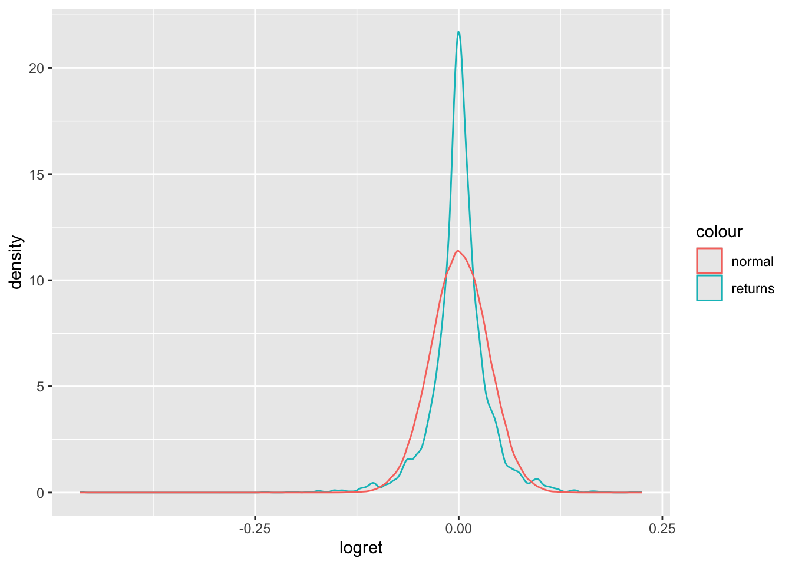
Figure 6.4: Densidad de rendimientos del Bitcoin Vs. una distribución normal
## [1] 14.86## [1] -0.716.2 Prueba de normalidad
\(H_0: K=S=0\)
jarque.test(vector_ret)##
## Jarque-Bera Normality Test
##
## data: vector_ret
## JB = 25617, p-value < 0.00000000000000022
## alternative hypothesis: greater6.3 Modelos ARCH y GARCH Univariados
Para plantear el modelo, supongamos–por simplicidad–que hemos construido y estimado un modelo AR(1). Es decir, asumamos que el proceso subyacente para la media condicional está dada por: \[\begin{equation} X_t = a_0 + a_1 X_{t-1} + U_t \end{equation}\]
Donde \(| a_1 |< 1\) para garantizar la convergencia del proceso en el largo plazo, en el cual: \[\begin{eqnarray*} \mathbb{E}[X_t] & = & \frac{a_0 }{1 - a_1} = \mu \\ Var[X_t] & = & \frac{\sigma^2}{1 - a_1^2} \end{eqnarray*}\]
Ahora, supongamos que este tipo de modelos pueden ser extendidos y generalizados a un modelo ARMA(p, q), que incluya otras variables exógenas. Denotemos a \(\mathbf{Z}_t\) como el conjunto que incluye los componentes AR, MA y variables exógenas que pueden explicar a \(X_t\) de forma que el proceso estará dado por: \[\begin{equation} X_t = \mathbf{Z}_t \boldsymbol{\beta} + U_t \end{equation}\]
Donde \(U_t\) es un proceso estacionario que representa el error asociado a un proceso ARMA(p, q) y donde siguen siendo válidos los supuestos: \[\begin{eqnarray*} \mathbb{E}[U_t] & = & 0 \\ Var[U_t] & = & \sigma^2 \end{eqnarray*}\]
No obstante, en este caso podemos suponer que existe autocorrelación en el término de error al cuadrado que puede ser capturada por un proceso similar a uno de medias móviles (MA) dado por: \[\begin{equation} U_t^2 = \omega + \alpha_1 U_{t-1}^2 + \alpha_2 U_{t-2}^2 + \ldots + \alpha_q U_{t-q}^2 + \nu_t \end{equation}\]
Donde \(\nu_t\) es un ruido blanco y \(U_{t-i} = X_{t-i} - \mathbf{Z}_{t-i} \boldsymbol{\beta}\), $i = 1, 2 ,$. Si bien los procesos son estacionarios por los supuestos antes enunciados, la varianza condicional estará dada por: \[\begin{eqnarray*} \sigma^2_{t | t-1} & = & Var[ U_t | \Omega_{t-1} ] \\ & = & \mathbb{E}[ U^2_t | \Omega_{t-1} ] \end{eqnarray*}\]
Donde \(\Omega_{t-1} = \{U_{t-1}, U_{t-2}, \ldots \}\) es el conjunto de toda la información pasada de \(U_t\) y observada hasta el momento \(t-1\), por lo que: \[\begin{equation*} U_t | \Omega_{t-1} \sim \mathbb{D}(0, \sigma^2_{t | t-1}) \end{equation*}\]
Así, de forma similar a un proceso MA(q) podemos decir que la varianza condicional tendrá efectos ARCH de orden \(q\) (ARCH(q)) cuando: \[\begin{equation} \sigma^2_{t | t-1} = \omega + \alpha_1 U_{t-1}^2 + \alpha_2 U_{t-2}^2 + \ldots + \alpha_q U_{t-q}^2 \tag{6.1} \end{equation}\]
Donde \(\mathbb{E}[\nu_t] = 0\), \(\omega > 0\) y \(\alpha_i \geq 0\), para \(i = 1, 2, \ldots, q\). Estas condiciones son necesarias para garantizar que la varianza sea positiva. En general, la varianza condicional se expresa de la forma \(\sigma^2_{t | t-1}\), no obstante, para facilitar la notación, nos referiremos en cada caso a esta simplemente como \(\sigma^2_{t}\).
Podemos generalizar esta situación si asumimos a la varianza condicional como dependiente de los valores de la varianza rezagados, es decir, como si fuera un proceso AR de orden \(p\) para la varianza y juntándolo con la ecuación (6.1). Bollerslev (1986) y Taylor (1986) generalizaron el problema de heterocedasticidad condicional. El modelo se conoce como GARCH(p, q), el cual se especifica como: \[\begin{eqnarray} \sigma^2_t & = & \omega + \alpha_1 U_{t-1}^2 + \alpha_2 U_{t-2}^2 + \ldots + \alpha_q U_{t-q}^2 \\ \nonumber & & + \beta_1 \sigma^2_{t-1} + \beta_2 \sigma^2_{t-2} + \ldots + \beta_p \sigma^2_{t-p} \tag{6.2} \end{eqnarray}\]
Donde las condiciones de no negatividad son que \(\omega > 0\), \(\alpha_i \geq 0\) para \(i = 1, 2, \ldots, q\), y \(\beta_j \geq 0\) para \(j = 1, 2, \ldots, p\). Además, otra condición de convergencia es que: \[\begin{equation*} \alpha_1 + \ldots + \alpha_q + \beta_1 + \ldots + \beta_p < 1 \end{equation*}\]
Usando el operador rezago \(L\) en la ecuación (6.2) podemos obtener: \[\begin{equation} \sigma^2_t = \omega + \alpha(L) U_t^2 + \beta(L) \sigma^2_t \tag{6.3} \end{equation}\]
De donde podemos establecer: \[\begin{equation} \sigma^2_t = \frac{\omega}{1 - \beta(L)} + \frac{\alpha(L)}{1 - \beta(L)} U_t^2 \end{equation}\]
Por lo que la ecuación (6.2) del GARCH(p, q) representa un ARCH(\(\infty\)): \[\begin{equation} \sigma^2_t = \frac{\omega}{1 - \beta_1 - \beta_2 - \ldots - \beta_p} + \sum_{i = 1}^\infty c_i U_{t-i}^2 \end{equation}\]
donde \(c_i\) son los coeficientes de la expansión en serie de potencias \(\frac{\alpha(L)}{1 - \beta(L)} = \sum_{i=1}^\infty c_i L^i\).
6.3.1 Ejemplo ARCH(1)
Hasta ahora, las distribuciones utilizadas para medir el Valor en Riesgo de un activo (Bitcoin, en este caso) asumen que no existe correlación serial en los retornos diarios del activo. Observemos un par de gráficas de la función de autocorrelación para corroborar este hecho–ver la Figura 6.5–.
acf(logret)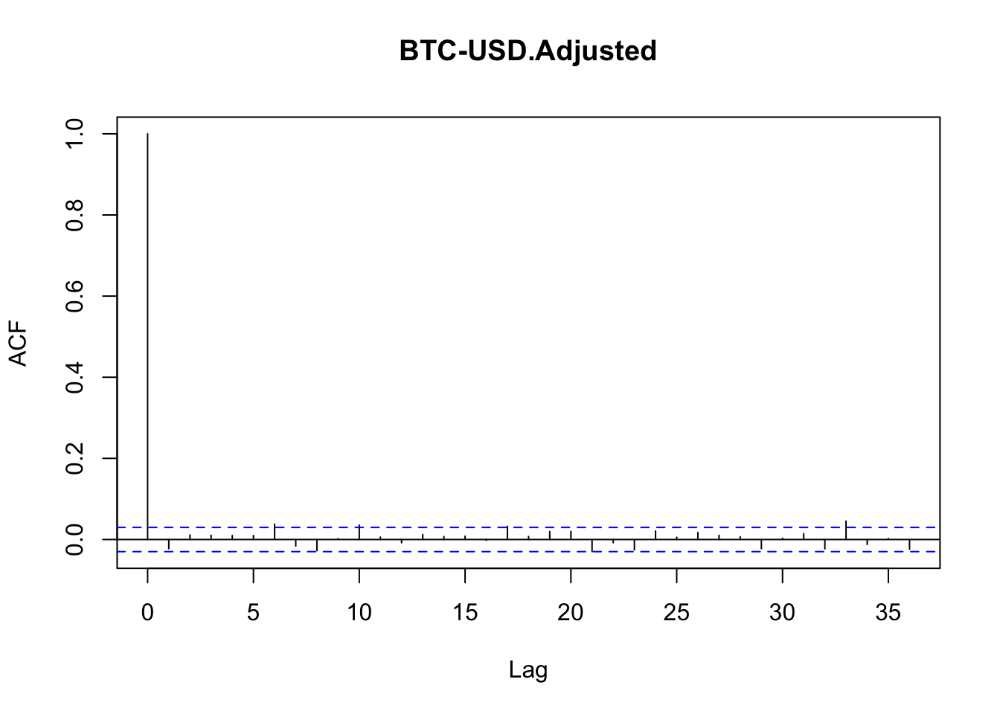
Figure 6.5: Función de autocorrelación parcial de los rendimientos del Bitcoin
La idea de clusterización de volatilidad asume que períodos de alta volatilidad serán seguidos por alta volatilidad y viceversa. Por esta razón, la función de autocorrelación útil para saber si existen clústers de volatilidad es utilizando el valor absoluto, ya que lo que importa es saber si la serie está autocorrelacionada en la magnitud de los movimientos. La Figura 6.6 muestra el comportamiento de los rendimientos en valor absoluto y la Figura 6.7 la función de autocorrelación parcial.
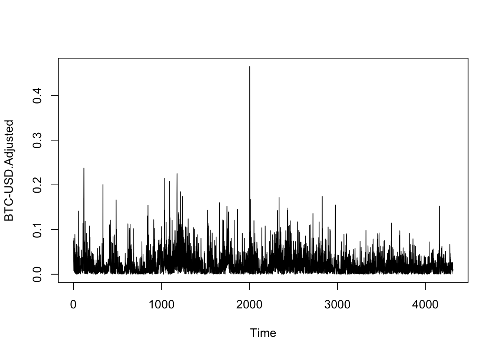
Figure 6.6: Evolución de los rendimientos del Bitcoin en valor absoluto
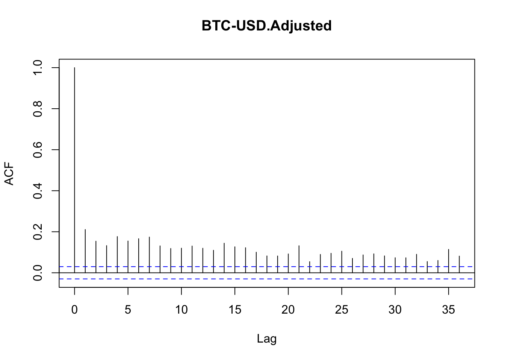
Figure 6.7: Función de autocorrelación parcial de los rendimientos del Bitcoin en valor absoluto
Otra manera de corroborar esta idea es volviendo IID nuestra serie de datos y observar que de este modo se pierde la autocorrelación serial, lo que refuerza la idea de que en esta serie existen clusters de volatilidad.
logret_random <- sample(as.vector(logret), size = length(logret), replace = FALSE)
acf(abs(logret_random))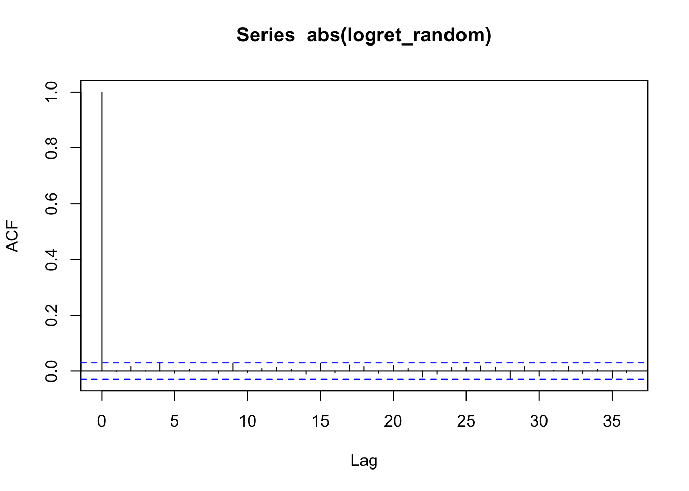
Figure 6.8: Función de autocorrelación parcial de los rendimientos del Bitcoin en valor absoluto
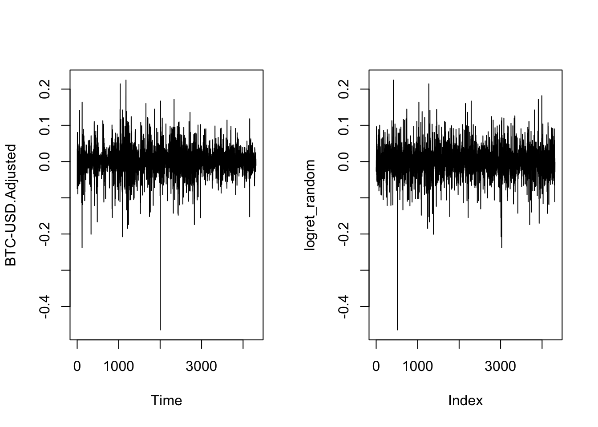
Figure 6.9: Función de autocorrelación parcial de los rendimientos del Bitcoin en valor absoluto
Ahora busquemos una prueba formal. El primer enfoque para comprobar si debemos aceptar o rechazar la hipótesis de que necesitamos estimar un ARCH(q) es realizar una prueba de efectos ARCH. De acuerdo con esta, nuestros datos de Bitcoin muestran que se rechaza la hipótesis de no efectos ARCH. Esta prueba resulta del siguiente código de R:
##
## Time series regression with "ts" data:
## Start = 1, End = 4311
##
## Call:
## dynlm(formula = logret ~ 1)
##
## Residuals:
## Min 1Q Median 3Q Max
## -0.46587 -0.01384 -0.00007 0.01459 0.22398
##
## Coefficients:
## Estimate Std. Error t value Pr(>|t|)
## (Intercept) 0.0011436 0.0005338 2.142 0.0322 *
## ---
## Signif. codes: 0 '***' 0.001 '**' 0.01 '*' 0.05 '.' 0.1 ' ' 1
##
## Residual standard error: 0.03505 on 4310 degrees of freedom##
## Time series regression with "ts" data:
## Start = 2, End = 4311
##
## Call:
## dynlm(formula = ehatsq ~ L(ehatsq))
##
## Residuals:
## Min 1Q Median 3Q Max
## -0.017970 -0.001062 -0.000939 -0.000299 0.215977
##
## Coefficients:
## Estimate Std. Error t value Pr(>|t|)
## (Intercept) 0.00106096 0.00007146 14.846 <0.0000000000000002 ***
## L(ehatsq) 0.13523487 0.01509409 8.959 <0.0000000000000002 ***
## ---
## Signif. codes: 0 '***' 0.001 '**' 0.01 '*' 0.05 '.' 0.1 ' ' 1
##
## Residual standard error: 0.004531 on 4308 degrees of freedom
## Multiple R-squared: 0.01829, Adjusted R-squared: 0.01806
## F-statistic: 80.27 on 1 and 4308 DF, p-value: < 0.00000000000000022
acf(ARCH_m$residuals)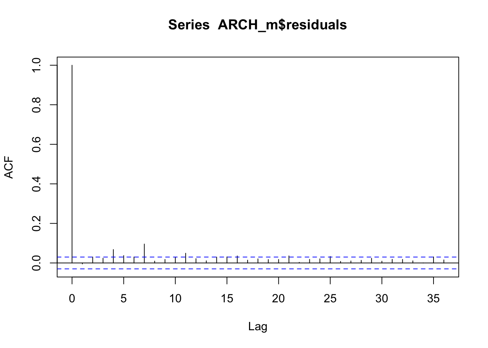
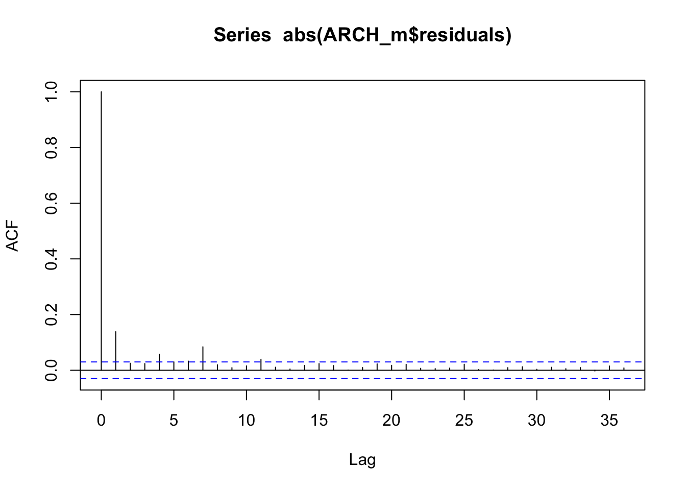
ArchTest(logret, lags = 1, demean = TRUE)##
## ARCH LM-test; Null hypothesis: no ARCH effects
##
## data: logret
## Chi-squared = 78.84, df = 1, p-value < 0.00000000000000022La prueba puede repetirse para diferentes especificaciones de ARCH, sin embargo, para efectos ilustrativos usaremos un ARCH(1). Estimemos un ARCH(1), considerando la siguiente especificación:
\[\begin{eqnarray*} Y_t & = & \mu+\sqrt{h_t}\varepsilon_t \\ h_t & = & \omega+\alpha_1 \varepsilon_{t-1}^2 \\ \varepsilon_t & \sim & N(0,1) \end{eqnarray*}\]
Considerando que la media es una AR(2), los resultados de esta estimación se muestran en el Cuadro 6.1.
library(rugarch)
auto.arima(logret)## Series: logret
## ARIMA(2,0,0) with non-zero mean
##
## Coefficients:
## ar1 ar2 mean
## -0.0224 0.0106 0.0011
## s.e. 0.0152 0.0152 0.0005
##
## sigma^2 = 0.001228: log likelihood = 8331.04
## AIC=-16654.07 AICc=-16654.07 BIC=-16628.6
model.spec = ugarchspec(variance.model = list(model = 'sGARCH', garchOrder = c(1, 0)),
mean.model = list(armaOrder = c(2, 0)),
distribution.model = "std")
arch.fit = ugarchfit(spec = model.spec, data = logret, solver = 'solnp')
df_arch <- as.data.frame(arch.fit@fit$matcoef)
df_arch$Signif <- ifelse(df_arch[, 4] < 0.001, "***",
ifelse(df_arch[, 4] < 0.01, "**",
ifelse(df_arch[, 4] < 0.05, "*",
ifelse(df_arch[, 4] < 0.1, ".", ""))))
knitr::kable(
df_arch,
col.names = c("Estimado", "Error Est.", "Estad. $t$", "Prob. $(>|t|)$", "Signif."),
caption = "Estimación del modelo ARCH(1) con media AR(2).",
align = c("r", "r", "r", "r", "c"),
digits = 4,
booktabs = TRUE
)| Estimado | Error Est. | Estad. \(t\) | Prob. \((>|t|)\) | Signif. | |
|---|---|---|---|---|---|
| mu | 0.0014 | 0.0003 | 4.2651 | 0.0000 | *** |
| ar1 | -0.0465 | 0.0152 | -3.0598 | 0.0022 | ** |
| ar2 | -0.0042 | 0.0125 | -0.3386 | 0.7349 | |
| omega | 0.0016 | 0.0003 | 4.8146 | 0.0000 | *** |
| alpha1 | 0.6852 | 0.1717 | 3.9900 | 0.0001 | *** |
| shape | 2.3936 | 0.1110 | 21.5583 | 0.0000 | *** |
boot.garch <- ugarchboot(arch.fit, method = "Partial", sampling = "raw",
n.ahead = 1, n.bootpred = 100000, solver = "solnp")
boot.garch##
## *-----------------------------------*
## * GARCH Bootstrap Forecast *
## *-----------------------------------*
## Model : sGARCH
## n.ahead : 1
## Bootstrap method: partial
## Date (T[0]): 4311-01-01
##
## Series (summary):
## min q.25 mean q.75 max forecast[analytic]
## t+1 -0.47792 -0.011218 0.001392 0.014549 0.20617 0.001927
## .....................
##
## Sigma (summary):
## min q0.25 mean q0.75 max forecast[analytic]
## t+1 0.041796 0.041796 0.041796 0.041796 0.041796 0.041796
## .....................6.3.2 Ejemplo GARCH(0,1)
Estimemos un GARCH(0,1) usando la siguiente especificación: \[\begin{eqnarray*} Y_t & = & \mu+\sqrt{h_t}\varepsilon_t \\ h_t & = & \omega+\beta_1 \sigma^2_{t-1} \\ \varepsilon_t & \sim & N(0,1) \end{eqnarray*}\]
Considerando que la media es una AR(2), los resultados de esta estimación se muestran en el Cuadro 6.2.
model.spec = ugarchspec(variance.model = list(model = 'sGARCH', garchOrder = c(0, 1)),
mean.model = list(armaOrder = c(2, 0)),
distribution.model = "std")
fit.garch.n = ugarchfit(spec = model.spec, data = logret, solver = "solnp")
df_garch01 <- as.data.frame(fit.garch.n@fit$matcoef)
df_garch01$Signif <- ifelse(df_garch01[, 4] < 0.001, "***",
ifelse(df_garch01[, 4] < 0.01, "**",
ifelse(df_garch01[, 4] < 0.05, "*",
ifelse(df_garch01[, 4] < 0.1, ".", ""))))
knitr::kable(
df_garch01,
col.names = c("Estimado", "Error Est.", "Estad. $t$", "Prob. $(>|t|)$", "Signif."),
caption = "Estimación del modelo GARCH(0,1) con media AR(2).",
align = c("r", "r", "r", "r", "c"),
digits = 4,
booktabs = TRUE
)| Estimado | Error Est. | Estad. \(t\) | Prob. \((>|t|)\) | Signif. | |
|---|---|---|---|---|---|
| mu | 0.0014 | 0.0003 | 4.1675 | 0.0000 | *** |
| ar1 | -0.0572 | 0.0129 | -4.4362 | 0.0000 | *** |
| ar2 | -0.0040 | 0.0124 | -0.3197 | 0.7492 | |
| omega | 0.0000 | 0.0000 | 59.1393 | 0.0000 | *** |
| beta1 | 0.9976 | 0.0000 | 21619.8572 | 0.0000 | *** |
| shape | 2.5751 | 0.0283 | 91.0808 | 0.0000 | *** |
boot.garch <- ugarchboot(fit.garch.n, method = "Partial", sampling = "raw",
n.ahead = 1, n.bootpred = 100000, solver = "solnp")
boot.garch##
## *-----------------------------------*
## * GARCH Bootstrap Forecast *
## *-----------------------------------*
## Model : sGARCH
## n.ahead : 1
## Bootstrap method: partial
## Date (T[0]): 4311-01-01
##
## Series (summary):
## min q.25 mean q.75 max forecast[analytic]
## t+1 -0.46469 -0.012309 0.001778 0.016211 0.23825 0.002102
## .....................
##
## Sigma (summary):
## min q0.25 mean q0.75 max forecast[analytic]
## t+1 0.041392 0.041392 0.041392 0.041392 0.041392 0.041392
## .....................6.3.3 Selección GARCH(p,q) óptimo
¿Cómo seleccionamos el orden adecuado para un GARCH(p,q)? Acá una respuesta.
\(Y_t = \mu+\sqrt{h_t}\varepsilon_t\)
\(h_t = \omega+\sum_{i=1}^p\beta_i h_{t-i}+\sum_{j=1}^q\alpha_j\varepsilon^2_{t-j}\)
\(\varepsilon_t \sim N(0,1)\)
6.3.3.1 Criterios de información
ic <- infocriteria(fit.garch.n)
knitr::kable(
data.frame(Criterio = rownames(ic), Valor = round(as.numeric(ic), 6)),
caption = "Criterios de información del modelo GARCH(0,1).",
align = c("l", "r"),
booktabs = TRUE
)| Criterio | Valor |
|---|---|
| Akaike | -4.164250 |
| Bayes | -4.155385 |
| Shibata | -4.164253 |
| Hannan-Quinn | -4.161119 |
6.3.3.2 Selección del modelo óptimo
Podemos hacer una búsqueda del mejor modelo de entre varios que probemos en un espectro de hasta un GARCH(4,4). Los resultados son los reportados en el siguiente Cuadro.
source("Lag_Opt_GARCH.R")
crit_garch <- as.data.frame(Lag_Opt_GARCH(ehatsq, 4, 4))
knitr::kable(
crit_garch,
col.names = c("$q$", "$p$", "AIC", "Óptimo"),
caption = "Criterios de información AIC en función de $p$ y $q$ para GARCH($p$,$q$).",
align = c("c", "c", "r", "c"),
digits = 5,
booktabs = TRUE
)| \(q\) | \(p\) | AIC | Óptimo |
|---|---|---|---|
| 1 | 1 | -11.11138 | 0 |
| 1 | 2 | -11.11149 | 0 |
| 1 | 3 | -11.11108 | 0 |
| 1 | 4 | -11.11158 | 0 |
| 2 | 1 | -11.11090 | 0 |
| 2 | 2 | -11.11090 | 0 |
| 2 | 3 | -11.11221 | 0 |
| 2 | 4 | -11.11180 | 0 |
| 3 | 1 | -11.11085 | 0 |
| 3 | 2 | -11.11085 | 0 |
| 3 | 3 | -11.11174 | 0 |
| 3 | 4 | -11.11029 | 0 |
| 4 | 1 | -11.11185 | 0 |
| 4 | 2 | -11.11154 | 0 |
| 4 | 3 | -11.11257 | 1 |
| 4 | 4 | -11.11198 | 0 |
6.3.3.3 Estimación de modelo óptimo
De esta forma, el modelo óptimo es un GARCH(2,4). Los resultados de la estimación se muestran en el Cuadro 6.5.
model.spec = ugarchspec(variance.model = list(model = 'sGARCH', garchOrder = c(4, 2)),
mean.model = list(armaOrder = c(2, 0)),
distribution.model = "std")
model.fit = ugarchfit(spec = model.spec, data = logret, solver = 'solnp')
df_opt <- as.data.frame(model.fit@fit$matcoef)
df_opt$Signif <- ifelse(df_opt[, 4] < 0.001, "***",
ifelse(df_opt[, 4] < 0.01, "**",
ifelse(df_opt[, 4] < 0.05, "*",
ifelse(df_opt[, 4] < 0.1, ".", ""))))
knitr::kable(
df_opt,
col.names = c("Estimado", "Error Est.", "Estad. $t$", "Prob. $(>|t|)$", "Signif."),
caption = "Estimación del modelo GARCH(2,4) óptimo con media AR(2).",
align = c("r", "r", "r", "r", "c"),
digits = 4,
booktabs = TRUE
)| Estimado | Error Est. | Estad. \(t\) | Prob. \((>|t|)\) | Signif. | |
|---|---|---|---|---|---|
| mu | 0.0011 | 0.0003 | 3.8479 | 0.0001 | *** |
| ar1 | -0.0435 | 0.0142 | -3.0699 | 0.0021 | ** |
| ar2 | -0.0021 | 0.0132 | -0.1606 | 0.8724 | |
| omega | 0.0000 | 0.0000 | 17.2304 | 0.0000 | *** |
| alpha1 | 0.1347 | 0.0205 | 6.5692 | 0.0000 | *** |
| alpha2 | 0.0000 | 0.0495 | 0.0000 | 1.0000 | |
| alpha3 | 0.0000 | 0.0218 | 0.0000 | 1.0000 | |
| alpha4 | 0.0255 | 0.0239 | 1.0680 | 0.2855 | |
| beta1 | 0.4407 | 0.2735 | 1.6115 | 0.1071 | |
| beta2 | 0.3981 | 0.2312 | 1.7220 | 0.0851 | . |
| shape | 3.1979 | 0.1342 | 23.8245 | 0.0000 | *** |
boot.garch <- ugarchboot(model.fit, method = "Partial", sampling = "raw",
n.ahead = 1, n.bootpred = 100000, solver = "solnp")
boot.garch##
## *-----------------------------------*
## * GARCH Bootstrap Forecast *
## *-----------------------------------*
## Model : sGARCH
## n.ahead : 1
## Bootstrap method: partial
## Date (T[0]): 4311-01-01
##
## Series (summary):
## min q.25 mean q.75 max forecast[analytic]
## t+1 -0.2601 -0.007574 0.001618 0.011094 0.19505 0.00166
## .....................
##
## Sigma (summary):
## min q0.25 mean q0.75 max forecast[analytic]
## t+1 0.021038 0.021038 0.021038 0.021038 0.021038 0.021038
## .....................6.3.3.4 Pronósticos con GARCH(1,1)
Para realizar pronósticos con la estimación de un GARCH, utilizando la librería rugarch, es necesario utilizar la función ugarchforecast().
model.spec = ugarchspec(variance.model = list(model = 'sGARCH',
garchOrder = c(1,1)),
mean.model = list(armaOrder = c(4,2)),
distribution.model = "std")
model.fit = ugarchfit(spec = model.spec , data = logret,
solver = 'solnp')
spec = getspec(model.fit)
setfixed(spec) <- as.list(coef(model.fit))Esta función precisa como argumentos nuestra estimación del modelo GARCH, con una modificación en la manera en que se presentan los coeficientes, realizada en la última línea del código anterior y que llamamos spec. n.ahead es el número de periodos que vamos a pronosticar, n.roll señala el número de pronósticos móviles que utilizaremos, en caso de que haya más información para realizar el pronóstico. Finalmente damos como input nuestro set de datos y como producto obtendremos el pronostico de Sigma tanto como de la serie.
forecast = ugarchforecast(spec, n.ahead = 12, n.roll = 0, logret)
sigma(forecast)## 4311-01-01
## T+1 0.02125208
## T+2 0.02170709
## T+3 0.02215232
## T+4 0.02258834
## T+5 0.02301568
## T+6 0.02343481
## T+7 0.02384617
## T+8 0.02425015
## T+9 0.02464711
## T+10 0.02503740
## T+11 0.02542131
## T+12 0.02579913
fitted(forecast)## 4311-01-01
## T+1 0.0007556044
## T+2 0.0005067467
## T+3 0.0003525613
## T+4 0.0003929180
## T+5 0.0003864224
## T+6 0.0004125946
## T+7 0.0004077864
## T+8 0.0004309400
## T+9 0.0004286602
## T+10 0.0004491526
## T+11 0.0004488928
## T+12 0.0004671848
forecast##
## *------------------------------------*
## * GARCH Model Forecast *
## *------------------------------------*
## Model: sGARCH
## Horizon: 12
## Roll Steps: 0
## Out of Sample: 0
##
## 0-roll forecast [T0=]:
## Series Sigma
## T+1 0.0007556 0.02125
## T+2 0.0005067 0.02171
## T+3 0.0003526 0.02215
## T+4 0.0003929 0.02259
## T+5 0.0003864 0.02302
## T+6 0.0004126 0.02343
## T+7 0.0004078 0.02385
## T+8 0.0004309 0.02425
## T+9 0.0004287 0.02465
## T+10 0.0004492 0.02504
## T+11 0.0004489 0.02542
## T+12 0.0004672 0.025806.4 Modelos ARCH y GARCH Multivariados
De forma similar a los modelos univariados, los modelos multivariados de heterocedasticidad condicional asumen una estructura de la media condicional. En este caso, descrita por un VAR(p) cuyo proceso estocástico \(\mathbf{X}\) es estacionario de dimensión \(k\). De esta forma, la expresión reducida del modelo o el proceso VAR(p) estará dado por: \[\begin{equation} \mathbf{X}_t = \boldsymbol{\delta} + \mathbf{A_1} \mathbf{X}_{t-1} + \mathbf{A_2} \mathbf{X}_{t-2} + \ldots + \mathbf{A_p} \mathbf{X}_{t-p} + \mathbf{U}_{t} \end{equation}\]
Donde cada uno de las \(\mathbf{A_i}\), \(i = 1, 2, \ldots, p\), son matrices cuadradas de dimensión \(k\) y \(\mathbf{U}_t\) representa un vector de dimensión \(k \times 1\) con los residuales en el momento del tiempo \(t\) que son un proceso puramente aleatorio. También se incorpora un vector de términos constantes denominado como \(\boldsymbol{\delta}\), el cual es de dimensión \(k \times 1\) –en este caso también es posible incorporar procesos determinísticos adicionales–.
Así, suponemos que el término de error tendrá estructura de vector: \[\begin{equation*} \mathbf{U}_t = \begin{bmatrix} U_{1t} \\ U_{2t} \\ \vdots \\ U_{Kt} \end{bmatrix} \end{equation*}\]
De forma que diremos que: \[\begin{equation*} \mathbf{U}_t | \Omega_{t-1} \sim (0, \Sigma_{t | t-1}) \end{equation*}\]
Dicho lo anterior, entonces, el modelo ARCH(q) multivariado será descrito por: \[\begin{equation} Vech(\Sigma_{t | t-1}) = \boldsymbol{\gamma}_0 + \Gamma_1 Vech(\mathbf{U}_{t-1} \mathbf{U}_{t-1}') + \ldots + \Gamma_q Vech(\mathbf{U}_{t-q} \mathbf{U}_{t-q}') (\#eq:M_ARCH) \end{equation}\]
Donde \(Vech\) es un operador que apila en un vector la parte triangular inferior (incluyendo la diagonal) de la matriz a la cual se le aplique, \(\boldsymbol{\gamma}_0\) es un vector de constantes, \(\Gamma_i\), \(i = 1, 2, \ldots\) son matrices de coeficientes asociados a la estimación.
Para ilustrar la ecuación @ref(eq:M_ARCH), tomemos un ejemplo de \(K = 2\), de esta forma tenemos que un M-ARCH(1) será: \[\begin{equation*} \Sigma_{t | t-1} = \begin{bmatrix} \sigma^2_{1, t | t-1} & \sigma_{12, t | t-1} \\ \sigma_{21, t | t-1} & \sigma^2_{2, t | t-1} \end{bmatrix} = \begin{bmatrix} \sigma_{11, t} & \sigma_{12, t} \\ \sigma_{21, t} & \sigma_{22, t} \end{bmatrix} = \Sigma_{t} \end{equation*}\]
Donde hemos simplificado la notación de las varianzas y la condición de que están en función de \(t-1\). Así, \[\begin{equation*} Vech(\Sigma_{t}) = Vech \begin{bmatrix} \sigma_{11, t} & \sigma_{12, t} \\ \sigma_{21, t} & \sigma_{22, t} \end{bmatrix} = \begin{bmatrix} \sigma_{11, t} \\ \sigma_{12, t} \\ \sigma_{22, t} \end{bmatrix} \end{equation*}\]
De esta forma, podemos establecer el modelo M-ARCH(1) con \(K = 2\) será de la forma: \[\begin{equation*} \begin{bmatrix} \sigma_{11, t} \\ \sigma_{12, t} \\ \sigma_{22, t} \end{bmatrix} = \begin{bmatrix} \gamma_{10} \\ \gamma_{20} \\ \gamma_{30} \end{bmatrix} + \begin{bmatrix} \gamma_{11} & \gamma_{12} & \gamma_{13} \\ \gamma_{21} & \gamma_{22} & \gamma_{23} \\ \gamma_{31} & \gamma_{32} & \gamma_{33} \end{bmatrix} \begin{bmatrix} U^2_{1, t-1} \\ U_{1, t-1} U_{2, t-1} \\ U^2_{2, t-1} \end{bmatrix} \end{equation*}\]
Como notarán, este tipo de procedimientos implica la estimación de muchos parámetros. En esta circunstancia, se suelen estimar modelos restringidos para reducir el número de coeficientes estimados. Por ejemplo, podríamos querer estimar un caso como: \[\begin{equation*} \begin{bmatrix} \sigma_{11, t} \\ \sigma_{12, t} \\ \sigma_{22, t} \end{bmatrix} = \begin{bmatrix} \gamma_{10} \\ \gamma_{20} \\ \gamma_{30} \end{bmatrix} + \begin{bmatrix} \gamma_{11} & 0 & 0 \\ 0 & \gamma_{22} & 0 \\ 0 & 0 & \gamma_{33} \end{bmatrix} \begin{bmatrix} U^2_{1, t-1} \\ U_{1, t-1} U_{2, t-1} \\ U^2_{2, t-1} \end{bmatrix} \end{equation*}\]
Finalmente y de forma análoga al caso univariado, podemos plantear un modelo M-GARCH(p, q) como: \[\begin{equation} Vech(\Sigma_{t | t-1}) = \boldsymbol{\gamma}_0 + \sum_{j = 1}^q \Gamma_j Vech(\mathbf{U}_{t-j} \mathbf{U}_{t-j}') + \sum_{m = 1}^p \mathbf{G}_m Vech(\Sigma_{t-m | t-m-1}) (\#eq:M_GARCH) \end{equation}\]
Donde cada una de las \(\mathbf{G}_m\) es una matriz de coeficientes. Para ilustrar este caso, retomemos el ejemplo anterior, pero ahora para un modelo M-GARCH(1, 1) con \(K = 2\) de forma que tendríamos: \[\begin{eqnarray*} \begin{bmatrix} \sigma_{11, t} \\ \sigma_{12, t} \\ \sigma_{22, t} \end{bmatrix} & = & \begin{bmatrix} \gamma_{10} \\ \gamma_{20} \\ \gamma_{30} \end{bmatrix} + \begin{bmatrix} \gamma_{11} & \gamma_{12} & \gamma_{13} \\ \gamma_{21} & \gamma_{22} & \gamma_{23} \\ \gamma_{31} & \gamma_{32} & \gamma_{33} \end{bmatrix} \begin{bmatrix} U^2_{1, t-1} \\ U_{1, t-1} U_{2, t-1} \\ U^2_{2, t-1} \end{bmatrix} \\ & & + \begin{bmatrix} g_{11} & g_{12} & g_{13} \\ g_{21} & g_{22} & g_{23} \\ g_{31} & g_{32} & g_{33} \end{bmatrix} \begin{bmatrix} \sigma_{11, t-1} \\ \sigma_{12, t-1} \\ \sigma_{22, t-1} \end{bmatrix} \end{eqnarray*}\]
6.5 Pruebas para detectar efectos ARCH
La prueba que mostraremos es conocida como una ARCH-LM, la cual está basada en una regresión de los residuales estimados de un modelo VAR(p) o cualquier otra estimación que deseemos probar, con el objeto de determinar si existen efectos ARCH –esta prueba se puede simplificar para el caso univariado–.
Partamos de plantear: \[\begin{eqnarray} Vech(\hat{\mathbf{U}}_t \hat{\mathbf{U}}_t') & = & \mathbf{B}_0 + \mathbf{B}_1 Vech(\hat{\mathbf{U}}_{t-1} \hat{\mathbf{U}}_{t-1}') + \ldots \\ \nonumber & & + \mathbf{B}_q Vech(\hat{\mathbf{U}}_{t-q} \hat{\mathbf{U}}_{t-q}') + \varepsilon_t \tag{6.4} \end{eqnarray}\]
Dada la estimación en la ecuación (6.4), plantearemos la estructura de hipótesis dada por: \[\begin{eqnarray*} H_0 & : & \mathbf{B}_1 = \mathbf{B}_2 = \ldots = \mathbf{B}_q = \mathbf{0} \\ H_a & : & \text{al menos una } \mathbf{B}_i \neq \mathbf{0} \end{eqnarray*}\]
La estadística de prueba será determinada por: \[\begin{equation} LM_{M-ARCH} = \frac{1}{2} T K (K + 1) - Traza \left( \hat{\Sigma}_{ARCH} \hat{\Sigma}^{-1}_{0} \right) \sim \chi^2_{[q K^2 (K + 1)^2 / 4]} \end{equation}\]
Donde la matriz \(\hat{\Sigma}_{ARCH}\) se calcula de acuerdo con la ecuación (6.4) y la matriz \(\hat{\Sigma}_{0}\) sin considerar una estructura dada para los errores.
6.6 Resumen del capítulo
En este capítulo introdujimos los modelos de heterocedasticidad condicional, diseñados para capturar la variabilidad agrupada (volatility clustering) que caracteriza a las series financieras de alta frecuencia.
Motivación. Las series de rendimientos financieros presentan dos hechos estilizados que los modelos ARMA estándar no capturan: (i) períodos de alta volatilidad seguidos de alta volatilidad y períodos de baja volatilidad seguidos de baja volatilidad, y (ii) colas pesadas en la distribución de los rendimientos. La prueba ARCH-LM (Engle, 1982) contrasta formalmente si los residuales al cuadrado presentan autocorrelación, lo que indica efectos ARCH.
Modelos ARCH y GARCH univariados. El modelo ARCH(\(q\)) de Engle (1982) especifica la varianza condicional como función de los cuadrados de los errores pasados:
\[h_t = \omega + \alpha_1 U_{t-1}^2 + \ldots + \alpha_q U_{t-q}^2\]
El modelo GARCH(\(p,q\)) de Bollerslev (1986) añade términos de varianza condicional rezagada, logrando parsimonia frente al ARCH(\(\infty\)) equivalente:
\[h_t = \omega + \sum_{i=1}^q \alpha_i U_{t-i}^2 + \sum_{j=1}^p \beta_j h_{t-j}\]
La condición de estacionariedad débil requiere \(\sum_{i} \alpha_i + \sum_{j} \beta_j < 1\). La selección del orden \((p,q)\) se realiza con los criterios AIC, BIC, Shibata y Hannan-Quinn disponibles en la función infocriteria() del paquete rugarch. En la práctica, el GARCH(1,1) es suficiente para la mayoría de las series financieras.
Valor en Riesgo (VaR). El VaR al nivel \(\alpha\) se obtiene como el cuantil \(\alpha\) de la distribución de rendimientos. Los modelos GARCH mejoran la estimación dinámica del VaR al actualizar la varianza condicional periodo a periodo.
Modelos ARCH y GARCH multivariados (M-GARCH). En sistemas de \(K\) variables, el M-GARCH extiende el modelo univariado apilando las varianzas y covarianzas condicionales mediante el operador \(Vech(\cdot)\). La proliferación de parámetros obliga a trabajar con versiones restringidas (matrices diagonales). La prueba M-ARCH-LM generaliza la prueba univariada y sigue una distribución \(\chi^2\) bajo la hipótesis nula de no efectos ARCH.
El capítulo siguiente extiende el análisis a datos en panel, permitiendo explotar tanto la dimensión temporal como la transversal de los datos.